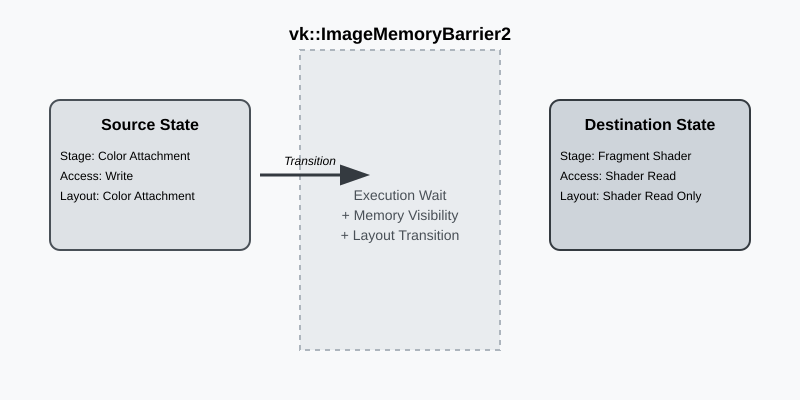

The Image Barrier: Implementing vk::ImageMemoryBarrier2
The Core Mechanism
In the world of modern Vulkan, the image memory barrier is the definitive tool for managing how resources flow through the pipeline. While the theory of synchronization is about "execution" and "visibility," the image barrier adds a third, equally critical component: Layout Transitions. Unlike a buffer, which is just a linear strip of memory, an image has a layout that determines how its texels are organized.
If we want to write to an image as a color attachment, the GPU hardware expects it to be in VK_IMAGE_LAYOUT_COLOR_ATTACHMENT_OPTIMAL. If we later want to sample that same image in a shader, it must be transitioned to VK_IMAGE_LAYOUT_SHADER_READ_ONLY_OPTIMAL. This is not just a driver-side "flag"—on some hardware, this transition might trigger a physical reorganization of the data or a cache flush.

When we talk about "physical reorganization," we’re referring to how different hardware units see the same bits. For instance, a Rasterizer might use a specialized tiled compression format (like Delta Color Compression) to save bandwidth. However, a Compute shader sampling that same image might not understand that compression. The layout transition ensures the data is "decompressed" or moved into a format that the next stage can consume.
Deconstructing the Image Barrier
When we record a pipeline barrier, we are essentially defining a "gate" that the GPU must pass through. Let’s look at how we construct this using the RAII-style Vulkan-Hpp wrappers we use in our engine:
auto imageBarrier = vk::ImageMemoryBarrier2{
.srcStageMask = vk::PipelineStageFlagBits2::eColorAttachmentOutput,
.srcAccessMask = vk::AccessFlagBits2::eColorAttachmentWrite,
.dstStageMask = vk::PipelineStageFlagBits2::eFragmentShader,
.dstAccessMask = vk::AccessFlagBits2::eShaderRead,
.oldLayout = vk::ImageLayout::eColorAttachmentOptimal,
.newLayout = vk::ImageLayout::eShaderReadOnlyOptimal,
.image = renderTarget.image(),
.subresourceRange = {
.aspectMask = vk::ImageAspectFlagBits::eColor,
.baseMipLevel = 0,
.levelCount = 1,
.baseArrayLayer = 0,
.layerCount = 1
}
};
auto dependencyInfo = vk::DependencyInfo{
.imageMemoryBarrierCount = 1,
.pImageMemoryBarriers = &imageBarrier
};
commandBuffer.pipelineBarrier2(dependencyInfo);In this example, we’re transitioning a color attachment so it can be sampled by a subsequent fragment shader. The srcStageMask tells the GPU "wait for the color attachment output stage of previous commands to finish," while the srcAccessMask specifies that we are specifically waiting for the memory writes from that stage to be complete. On the other side of the gate, the dstStageMask and dstAccessMask ensure that the fragment shader stage will wait to start its read operations until the layout transition and cache flushes are finished.
The Power of Layout Discard
One of the most common performance optimizations in Vulkan is the use of vk::ImageLayout::eUndefined as the oldLayout. When we set the old layout to undefined, we are telling the driver: "I don’t care about what was in this image before."
This is incredibly powerful. If the driver knows the previous content is garbage, it can skip the expensive work of preserving data during a layout transition. For example, if you’re about to clear an image and use it as a fresh color attachment, transitioning from eUndefined to eColorAttachmentOptimal is significantly faster than transitioning from eShaderReadOnlyOptimal (which might require a "resolve" or "decompression" of the previous frame’s data).
Subresource Ranges and Aspect Masks
Vulkan doesn’t just let us synchronize an entire image; it gives us surgical control over specific parts of it via the subresourceRange. This is vital for complex effects:
-
Mipmap Generation: We can transition mip level 0 to
eTransferSrcOptimaland level 1 toeTransferDstOptimalto perform a blit, then transition them back. -
Aspect Masks: For depth-stencil formats, we might only want to transition the
eDepthaspect while leavingeStencilalone (or vice versa). -
Layered Rendering: In VR or cubemap rendering, we can transition individual array layers independently to allow different parts of the GPU to work on different views simultaneously.
Synchronization in Dynamic Rendering
One of the major shifts in modern Vulkan is the move toward Dynamic Rendering (core since Vulkan 1.3, or via extensions). In the old "Render Pass" system, transitions were often hidden within subpass dependencies or the render pass definition itself. This was often confusing and led to over-synchronization.
With dynamic rendering, the responsibility for transitions falls squarely on us. We typically perform our transitions between calls to beginRendering and endRendering. This might feel like more work, but it provides far more clarity. We know exactly where the transition is happening because we recorded it explicitly. It also makes it much easier to integrate with modern engine architectures where rendering passes are more fluid and less rigid than the legacy system.
Putting it Together in the Engine
In a real-world engine, you rarely emit just one barrier. You batch them. Here is how our Renderer might handle a common "Post-Process" sequence where we transition both the scene color and the depth buffer (for depth-of-field) before the final UI pass:
std::array<vk::ImageMemoryBarrier2, 2> barriers;
// Transition Scene Color from Attachment to Shader Read
barriers[0] = vk::ImageMemoryBarrier2{
.srcStageMask = vk::PipelineStageFlagBits2::eColorAttachmentOutput,
.srcAccessMask = vk::AccessFlagBits2::eColorAttachmentWrite,
.dstStageMask = vk::PipelineStageFlagBits2::eFragmentShader,
.dstAccessMask = vk::AccessFlagBits2::eShaderRead,
.oldLayout = vk::ImageLayout::eColorAttachmentOptimal,
.newLayout = vk::ImageLayout::eShaderReadOnlyOptimal,
.image = sceneColor.image()
};
// Transition Depth from Attachment to Shader Read (Depth Aspect only!)
barriers[1] = vk::ImageMemoryBarrier2{
.srcStageMask = vk::PipelineStageFlagBits2::eLateFragmentTests,
.srcAccessMask = vk::AccessFlagBits2::eDepthStencilAttachmentWrite,
.dstStageMask = vk::PipelineStageFlagBits2::eFragmentShader,
.dstAccessMask = vk::AccessFlagBits2::eShaderRead,
.oldLayout = vk::ImageLayout::eDepthStencilAttachmentOptimal,
.newLayout = vk::ImageLayout::eDepthReadOnlyOptimal,
.image = depthBuffer.image(),
.subresourceRange = {
.aspectMask = vk::ImageAspectFlagBits::eDepth,
.baseMipLevel = 0,
.levelCount = 1,
.baseArrayLayer = 0,
.layerCount = 1
}
};
commandBuffer.pipelineBarrier2(vk::DependencyInfo{
.imageMemoryBarrierCount = static_cast<uint32_t>(barriers.size()),
.pImageMemoryBarriers = barriers.data()
});By batching these into a single DependencyInfo, the driver can optimize the state changes and cache flushes, ensuring the GPU spends more time drawing and less time waiting for barriers.
Simple Engine: The Unified Barrier
In Simple Engine, we consolidate our image transitions to minimize driver overhead. If you look at Renderer::Render in renderer_rendering.cpp, you’ll see how we handle the transition from the Opaque Pass to the Post-Processing Pass. We don’t just transition the color buffer; we often transition the depth buffer and any auxiliary buffers (like our G-Buffer for Forward+ lighting) in a single vk::DependencyInfo.
One specific trick we use in Simple Engine is the Layout Tracking system. Because our Renderer can switch between different rendering paths (like Rasterization vs. Ray Query), we keep track of the current layout of our main images (like opaqueSceneColorImageLayouts). When we begin a pass, we check the current layout and only emit a barrier if a transition is actually necessary. If the image is already in the correct layout, we skip the barrier entirely, saving precious GPU cycles.
Navigation
Previous: Introduction | Next: Queue Family Ownership